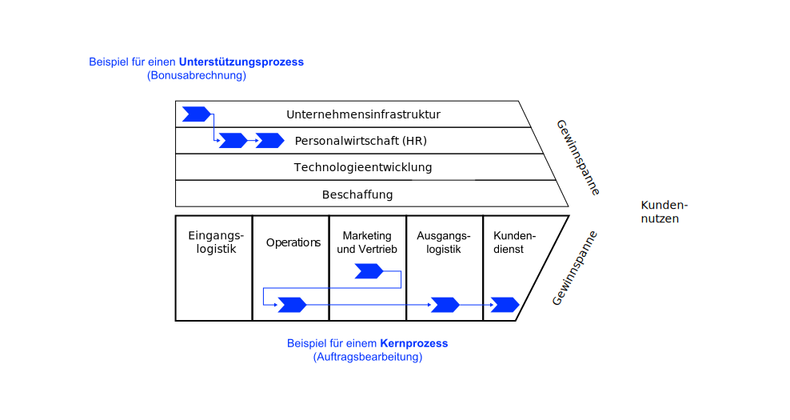
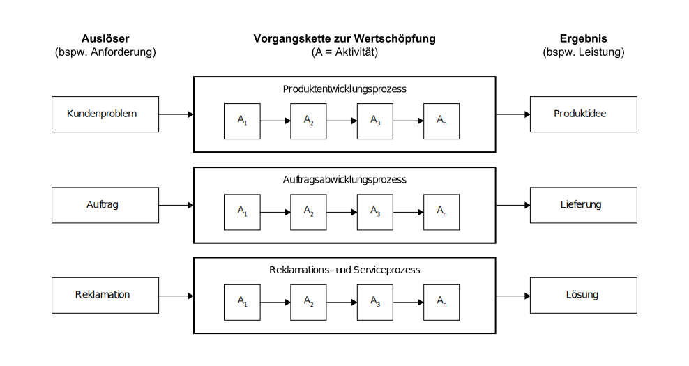
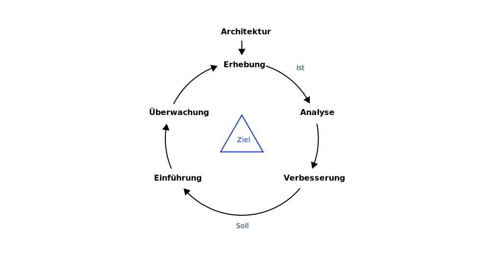
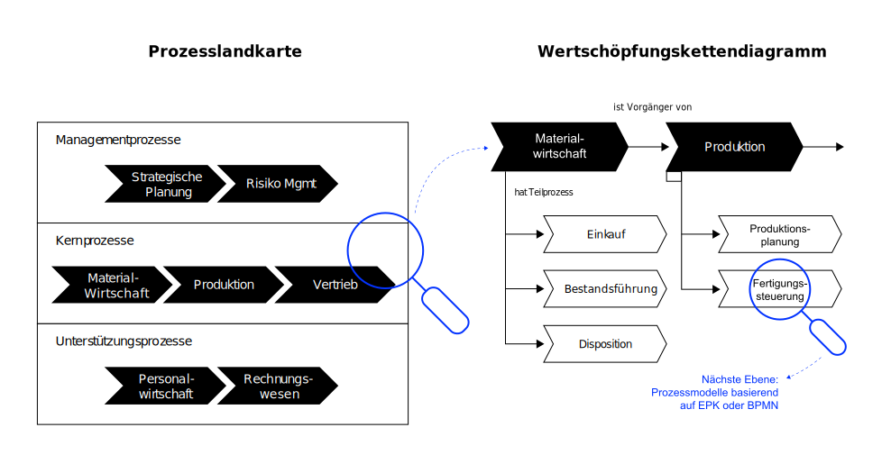
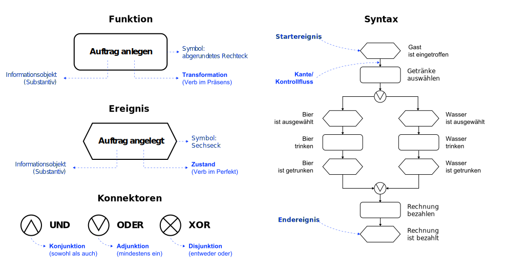
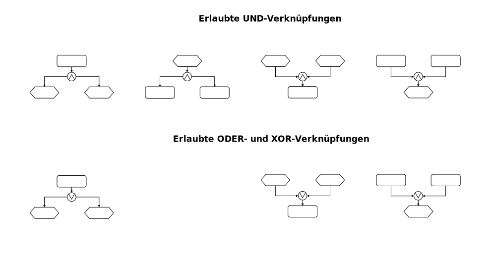
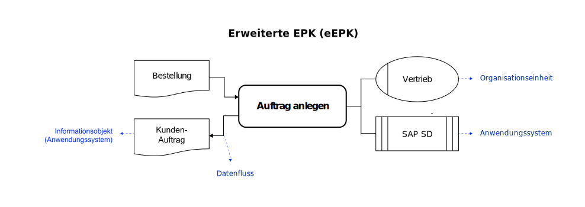

K5 Prozesse
Wie werden Abläufe im Unternehmen gesteuert?
Neu-Ulm University of Applied Sciences
1. Januar 2023
Motivation
If you can’t describe what you are doing as a process, you don’t know what you’re doing. William Edwards Demin, Physiker, Statistiker und Pionier im Qualitätsmanagement
Lernergebnisse 🎯
Nach dieser Einheit können Sie
- erklären, was Geschäftsprozesse sind und welche Bedeutung sie haben,
- Kern- und Unterstützungsprozesse unterscheiden und Beispiele geben,
- Aufgaben, Ziele und die Vorgehensweise des Geschäftsprozessmanagement (GPM) nennen und
- die Basisnotation der EPK beschreiben und die Modellierungsregeln anwenden,
- EPK-Prozessdiagrame lesen, fehler erknennen und korrigieren sowie
- textliche Beschreibungen von Prozessen als EPK und eEPK darstellen.
Geschäftsprozesse
Definition
Ein Geschäftsprozess ist eine eine zielgerichtete zeitlich-logische Folge oder Vorgangskette von Aktivitäten (bzw. Tätigkeiten, Geschäftsvorgänge), die für das Unternehmen einen Beitrag zur Wertschöpfung leistet (Leimeister 2021).
In der Regel sind diese Prozesse aus der Geschäftsstrategie abgeleitet (siehe Business Engineering und am Kunden orientiert. Kundenorientierung bedeutet, dass Geschäftsprozesse entweder direkt oder indirekt einen Wert für Kunden erzeugen.
Merkmale
- Geschäftsprozesse bilden die Basis für die Wertschöpfung des Unternehmens. Sie dienen dem Kunden (Problemlösung) und dem Unternehmen (Gewinnerzielung).
- Geschäftsprozesse sind Routineaufgaben des Unternehmens, die weitestgehend Standards folgen und keine einmaligen Einzelprojekte.
- Jeder Geschäftsprozess hat einen Auslöser (bpsw. einen Auftrag) und ein Ergebnis (bspw. ausgeführter Auftrag und Rechnung für den Kunden).
- Die Aktivitäten des Geschäftsprozesses können (teilweise) parallel, wiederholt oder alternativ ausgeführt werden.
- Geschäftsprozesse queren Abteilungen und enden nicht an der Unternehmensgrenze. Deshalb sind an Geschäftsprozessen in der Regel mehrere organisatorische Einheiten des Unternehmens und gegebenenfalls externe Partner (bspw. Kunden beteiligt.
Komponenten

Kern- und Unterstützungsprozesse

Beispiele

Geschäftsprozessmanagement
Definition
Das Geschäftsprozessmanagement ist dafür verantwortlich, Geschäftsprozesse so zu gestalten, umzusetzen, zu kontrollieren und zu verbessern, dass das Unternehmen die gesteckten Ziele möglichst effizient erreicht (Mertens u. a. 2016).
Das Geschäftprozessmanagement implementiert einen kontinuierlichen Verbesserungsprozess, der Geschäftsprozessse kontinuierlich überwacht, analysisert und verbessert.
Ablauf

Ziele
Das Geschäftsprozessmanagement möchte Effektivität und Effizienz des Unternehmens steigern.
In der Regel sind Unternehmen in einer Marktwirtschaft gewinnorientiert. Das Geschäftsprozessmanagement zielt in solchen Unternehmen deshalb darauf ab, die Kosten durch höhere Effizienz zu senken und Umsätze durch eine bessere Kundenbindung zu erhöhen (Schmelzer und Sesselmann 2020).
Konkrete Ziele sollten aus den Unternehmenszielen abgeleitet (siehe Business Engineering) und in spezifische und messbare Ziele und Kenngrößen für einzelne Geschäftsprozesse überführt werden.
Zieldimensionen

Verbesserung
- Weglassen
-
Überprüfung der Notwendigkeit von Prozessen oder Teilprozessen zur Funktionserfüllung, Abschaffung von Medienbrüchen, Abschaffung von nicht sinnvollen Genehmigungsschritten
- Auslagern
-
Vergabe von (Teil-)prozessen an externe spezialisierte Dienstleister (bspw. Buchführung und Bilanzierung durch einen Steuerberater)
- Zusammenfassen
-
Arbeitsteilige Aufgaben werden so zusammengefasst, dass ein Bearbeiter zusammengehörige Teilprozesse vollständig ohne Bearbeiterwechsel durchführt (z. B. Kundenberatung und Auftragserfassung bis zur Erstellung der Auftragsbestätigung)
- Parallelisieren
-
Erhöhung der Arbeitsteilung bei parallelisierbaren Teilschritten (z. B. Klausurkorrektur durch mehrere Prüfer je Teilgebiet)
- Verlagern
-
Verlagerung von Prozessschritten, so dass Aufgaben frühzeitig durchgeführt werden, ohne später zu einem Flaschenhals zu werden (z. B. vollständige Erfassung der Kundeninformationen bei Auftragserfassung)
- Beschleunigen
-
Einsatz von zeitsparenden Arbeitsmitteln (Dokumentenmanagementsystem ersetzt Papierdokumentation, Reduzierung von Warte- und Liegezeiten durch Erhöhung von Kapazitäten
- Schleifen vermeiden
-
Schleifenfreie Gestaltung von Prozessen, d. h. Verzicht auf Wiederholung von Teilschritten eines Prozesses (z. B. Onlineerfassung aller Kunden und Bestelldaten im Rahmen der Auftragserfassung und Freigabe des Auftrages erst nach vollständiger Plausibilisierung der Daten)
- Ergänzen
-
Vermeidung von nachgelagerten Prozessen zur „Schadensbeseitigung” (z. B. Ergänzung einer Qualitätskontrolle nach der Teilemontage um einen möglichen „Nachbearbeitungsprozess” oder eine „Rückholaktion fehlerhafter Ware” zu vermeiden).
Prozessmodellierung
Zielsetzung
Die Prozessmodellierung dient der Dokumentation von Sachverhalten und erleichtert deren Kommunikation im Unternehmen (bspw. zwischen Hierarchie-Ebenen oder Teams).
Prozessmodelle ermöglichen zudem die Analyse von Problemen und Fehlern und dienen der Gestaltung von Aktivitätsketten und deren automatisierter Abarbeitung mit Hilfe von Anwendungssystemen (Leimeister 2021).
Übersichtsdiagramme

Modellierungssprachen
Zur Modellierung von Geschäftsprozessen und zur Gestaltung von Informationssystemen finden sich in der Praxis eine Vielzahl von Methoden. Zwei Methoden werden besonders häufig eingesetzt: Ereignisgesteuerte Prozesskette (EPK) und Business Process Model and Notation (BPMN) (Gadatsch 2020).
Diese Vorlesung führt die Basisnotation der EPK ein.
EPK
Basisnotation

Modellierungsregeln
Die Modellierung (also die zeitliche Abfolge des Prozesses) erfolgt von oben links nach unten rechts.
- Kanten verknüpfen Funktionen und Ereignisse und stellen den Kontrollfluss dar. Jede Funktion/Ereignis hat jeweils nur eine ein- bzw. ausgehende Kante.
- Ereignisse und Funktionen wechseln einander ab.
- Eine EPK beginnt und endet mit (mindestens) einem Ereignis. Das prozessauslösende Ereignis wird als Start-Ereignis, das prozessabschließendes Ereignis als Endereignis bezeichnet.
- Folgeprozesse können durch Ende-Ereignisse eines vorangegangenen Prozesses ausgelöst werden, d. h. ein Ende-Ereignis kann in einem anderen Prozess ein Startereignis darstellen.
Verkettungen

Erweiterte EPK (eEPK)

Übungen ✏️
Erhebung
Suchen Sie sich jeweils einen der folgenden Geschäftsprozesse aus und beschreiben Sie diesen den anderen Mitgliedern der Gruppe (verbale Beschreibung).
- Angebotsbearbeitung in einem Produktionsbetrieb
- Bearbeitung von Reklamationen in einem Online-Shop
- Durchführung eines Bewerbungsgesprächs in einem Unternehmen
- Optimierung eines Geschäftsprozesses in einem Unternehmen
- Verkauf eines Autos in einem Autohaus
Dokumentieren Sie Ihre Erkenntnisse in folgender Vorlage.
| Typ | Kern- oder Unterstützungsprozess |
| Auslöser | Startereignis |
| Aktivitäten | Liste wesentlicher Tätigkeiten |
| Ergebnis | Output/Ziel |
| Kennzahlen | Indikator der Effektivität/Effizienz |
| Verantwortlicher | Process-Owner |
Weshalb handelt es sich um einen Geschäftsprozess?
Analyse und Verbesserung
Ein fiktiver Maschinenhersteller organisiert seine Auftragsbearbeitung wie folgt:
- Der Prozess beginnt beim Vertriebsleiter, der sich persönlich um eingehende Anfragen der Kunden kümmert.
- Danach wird das Angebot vom Sachbearbeiter A an den Kunden versandt. Bevor das Angebot verschickt wird, wird es vom Vertriebsleiter kontrolliert. Da der Vertriebsleiter nicht immer anwesend ist, kann es vorkommen, dass ein vom Sachbearbeiter A fertig erstelltes Angebot einige Tage liegen bleibt.
- Wenn der Kunde eine Bestellung vornimmt, wird diese vom Sachbearbeiter C manuell geprüft und danach vom Sachbearbeiter D im Auftragsbearbeitungssystem erfasst.
- Der Kunde erhält eine Auftragsbestätigung, nachdem der Vertriebsleiter den Auftrag gesehen und freigegeben hat.
- Nach der Erfassung des Auftrages geht der Auftrag an den Leiter der Logistikabteilung. Dieser entscheidet persönlich, ob ein Teil vom Lager entnommen werden kann, beschafft werden muss oder gar noch zu produzieren ist.
- Falls er sich unsicher ist, fragt er beim Vorstand nach.
- Der Lagerleiter erhält daraufhin den Auftrag, das Material auszuliefern. Wenn er an diesem Tag nicht im Betrieb anwesend ist, übergibt er den Auftrag erst am folgenden Werktag an einen seiner Sachbearbeiter (z. B. H.)
- Der Sachbearbeiter (hier H) entnimmt das Teil, versendet es an den Kunden und löst eine Nachbestellung des Ersatzteiles beim zuständigen Lieferanten aus.
- Nach dem Versand übermittelt Sachbearbeiter H im Lager seinem Vorgesetzten die Abgangsbuchung. Dieser prüft den Beleg und verschickt ihn an den Leiter des Rechnungswesens.
- Der Leiter Rechnungswesen gibt den Beleg an den Leiter der Abteilung Buchhaltung und dieser wiederum an einen seiner Sachbearbeiter. Da der Leiter Rechnungswesen häufig vom Vorstand für Planungsaufgaben eingesetzt wird, bleiben die Belege häufig einige Tage liegen.
- Der Sachbearbeiter M erstellt in diesem Fall die Rechnung und verschickt sie an den Kunden.
Analysieren Sie den Prozess, identifizieren Sie Optimierungspotenziale und Schlagen Sie Verbesserungsmöglichkeiten im Sinne der Prozessoptimierung vor.
Modellierung (Angebotsbearbeitung)
Modellieren Sie den von Ihnen optimierten Angebotsbearbeitungsprozess des fiktiven Maschinenherstellers aus der vorherigen Aufgabe.
Modellierung (Reisebuchung)
Modellieren Sie gemeinsam folgenden Geschäftsprozess als eEPK. Starten Sie damit im Text Ereignisse, Funktionen und Verknüpfungsoperatoren zu markieren.
- Die Buchhaltung hat die Aufgabe, zu Arbeitsbeginn eines jeden Werktags die am Vortag neu eingegangenen Reisebuchungen zu ermitteln (die Buchungen sind im Reservierungssystem erfasst). Sind keine unbearbeiteten Reisebuchungen im System endet der Prozess.
- Für jede neue Reisebuchung muss eine Rechnung erstellt werden. Rechnungen müssen anschließend im Finanzbuchhaltungssystem SAP FI verbucht werden.
- Danach werden parallel (A) die Kreditkarte des Kunden entweder mit dem Rechnungsbetrag belastet oder der Rechnungsbetrag wird per Lastschrift eingezogen (je nach Zahlungsart) und (B) die Rechnung versendet.
Modellierung (Einkaufsprozess)
Erstellen Sie für folgende Prozess eine ereignisgesteuerte Prozesskette.
- In einem Unternehmen bestellt der zentrale Einkauf regelmäßig Büromaterial bei vier verschiedenen Lieferanten.
- Wenn Bedarf vorhanden ist, ruft die Einkaufsabteilung vier Lieferanten an, um ein Angebot über die Lieferungen einzuholen.
- Sobald die Angebote eingetroffen sind, werden sie verglichen, es wird ein Lieferant ausgewählt und die Bestellung an diesen Lieferanten geschickt.
- Wenn die bestellten Büromaterialien eingetroffen sind, prüft die Abteilung Wareneingangskontrolle zunächst, ob die Lieferung korrekt erfolgte.
- Die Ware wird entweder angenommen oder reklamiert (bei Beschädigung oder Fehllieferungen, der Prozess endet hier).
- Nach erfolgter Lieferung erhält das Unternehmen die Rechnung.
- Die Einkaufsabteilung prüft die Rechnung und weist die Bezahlung an.